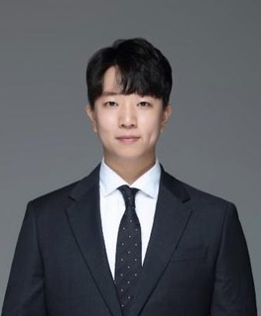

03 · 9건
콘텐츠 기획·집필
구성안과 원고를 직접 쓴 영상과 사내 콘텐츠입니다. 편집 과정을 알기 때문에 촬영 현장과 편집실에서 바로 쓰일 수 있는 원고를 씁니다.

PR 대행사, 대기업 사내 커뮤니케이션, 정부·공공기관 영상 콘텐츠를 거치며 5년간 캠페인을 기획하고 운영했습니다. 현장을 직접 취재해 원고를 쓰고, 그 원고가 영상과 캠페인으로 완성될 때까지 따라갑니다.
의료기기와 건강식품은 광고 규제가 까다롭습니다. 심의 기준과 관련 법을 먼저 확인하고, 그 안에서 쓸 수 있는 표현으로 메시지를 짭니다.
고객사, 해외 운영사, 병원 홍보팀, 정부 부처처럼 원하는 것이 서로 다른 사람들 사이에서 일정과 메시지를 조율합니다.
현장을 직접 취재하고, 촬영과 편집 과정을 알기 때문에 제작 현장에서 바로 쓰이는 구성안과 원고를 씁니다.
캠페인을 실제로 굴려본 기록입니다. 언론홍보, 인플루언서와 바이럴, 웹사이트와 디지털 광고 운영까지 집행 단계의 일을 맡았습니다.
문제를 다시 정의하는 데서 출발한 제안들입니다. 일을 따낸 스트라이커 제안과, 선정되지 않았어도 기획 과정을 보여드리고 싶은 제안을 함께 담았습니다.
구성안과 원고를 직접 쓴 영상과 사내 콘텐츠입니다. 편집 과정을 알기 때문에 촬영 현장과 편집실에서 바로 쓰일 수 있는 원고를 씁니다.